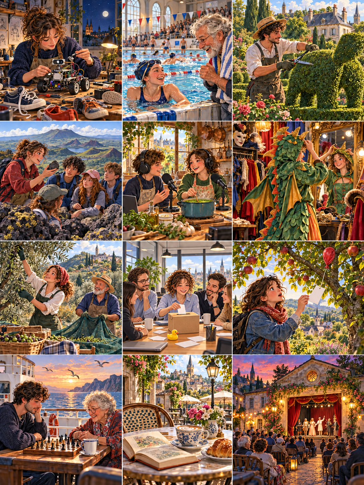

La course du dimanche
The Sunday Race
A swimming instructor enters a race with her father and discovers that their plans are very different.

Élodie donnait des cours de natation dans une piscine municipale. Quand elle vit l'affiche d'une course familiale, elle inscrivit son père sans lui demander son avis. À soixante-deux ans, Bernard nageait tous les dimanches, mais il refusait toujours les compétitions. « Nous formerons une équipe, chacun fera deux longueurs », expliqua-t-elle au téléphone. Il accepta après un long silence, à condition qu'elle ne lui achète pas un bonnet avec son prénom écrit en grandes lettres.
Show English translationHide English translation
Élodie taught swimming at a municipal pool. When she saw a poster for a family race, she entered her father without asking him. At sixty-two Bernard swam every Sunday, but always refused competitions. 'We'll be a team; each of us will do two lengths,' she explained on the phone. After a long silence he agreed, provided she did not buy him a cap with his name in large letters.
Pendant les semaines suivantes, Élodie prépara un programme précis. Elle chronométrait chaque longueur et corrigeait la position des bras de son père. Bernard suivait ses conseils, mais regardait souvent l'horloge. Un soir, il sortit de l'eau avant la fin de la séance. Elle pensa qu'il était fatigué et proposa des exercices plus faciles. « Je ne suis pas ton élève », répondit-il doucement. Ces quelques mots la surprirent davantage qu'une mauvaise performance ne l'aurait fait.
Show English translationHide English translation
Over the following weeks Élodie prepared a precise schedule. She timed every length and corrected her father's arm position. Bernard followed her advice but often looked at the clock. One evening he got out before the session ended. She thought he was tired and suggested easier exercises. 'I'm not your pupil,' he replied gently. Those few words surprised her more than a poor performance would have.
Le samedi, elle passa chez lui pour parler de la course. Sur la table, elle trouva une vieille photographie : Bernard la tenait dans ses bras au bord d'un bassin. Elle avait trois ans et portait des brassards jaunes. Il raconta qu'elle refusait alors de mettre la tête dans l'eau. Pour la rassurer, il avait inventé un jeu de poissons. Il n'avait jamais mesuré ses progrès avec une montre. Élodie rangea discrètement son chronomètre dans son sac.
Show English translationHide English translation
On Saturday she visited him to talk about the race. On the table she found an old photograph: Bernard was holding her beside a pool. She was three and wore yellow armbands. He explained that she had refused to put her head underwater. To reassure her he had invented a fish game. He had never measured her progress with a watch. Élodie quietly put her stopwatch in her bag.
Le dimanche, les équipes attendaient devant leurs lignes. Bernard avait apporté deux bonnets jaunes tout simples. Quand le signal retentit, Élodie partit rapidement, puis toucha le mur pour laisser son père continuer. À mi-parcours, il perdit ses lunettes. Il s'arrêta pour les remettre, tandis que plusieurs nageurs passaient devant lui. Elle sentit revenir son envie de crier des instructions. Puis elle applaudit seulement, comme il l'avait fait pendant ses premières traversées du petit bassin des enfants.
Show English translationHide English translation
On Sunday the teams waited in front of their lanes. Bernard had brought two plain yellow caps. When the signal sounded, Élodie set off quickly, then touched the wall to let her father continue. Halfway through he lost his goggles. He stopped to replace them while several swimmers passed him. She felt the urge to shout instructions return. Then she simply applauded, as he had during her first crossings of the children's pool.
Ils terminèrent sixièmes sur huit équipes. Bernard sortit de l'eau en riant et réclama un chocolat chaud, qu'il considérait comme sa véritable récompense. Au café de la piscine, Élodie lui demanda s'il voudrait revenir le dimanche suivant. Il répondit oui, mais pour nager sans course et sans programme. Elle accepta. Avant de partir, ils prirent une photographie avec leurs bonnets jaunes. Cette fois, c'était Bernard qui avait oublié d'enlever ses lunettes, et sa fille qui le tenait par les épaules.
Show English translationHide English translation
They finished sixth out of eight teams. Bernard came out laughing and demanded hot chocolate, which he considered his real reward. In the pool café Élodie asked whether he would return the following Sunday. He said yes, but to swim without a race or a schedule. She agreed. Before leaving they took a photograph in their yellow caps. This time Bernard had forgotten to remove his goggles, and his daughter was holding him by the shoulders.